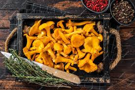
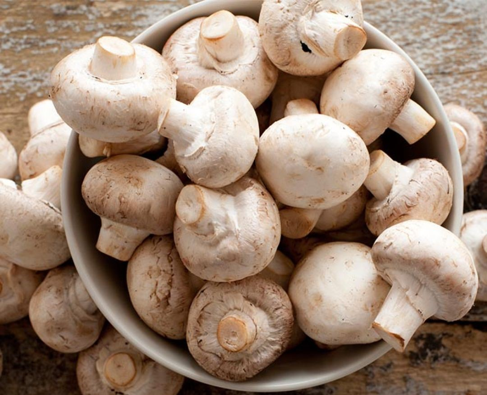

COGUMELO SHIMEJI
As propriedades medicinais ou nutracêuticas de alguns cogumelos vem incrementando o seu 'valor agregado, o Shimeji é o terceiro cogumelo comestível mais cultivado no mundo
Rico em vitamina B12, essencial para vegetarianos e veganos, . Além disso, tem importante papel na produção de melatonina, e ajuda a melhorar a memória e concentração.
O Shimeji carrega uma considerável quantidade de ácido fólico que evita a má formação do feto e más formações congênitas, previnem doenças cardiovasculares, desordens mentais, câncer e o mal de Alzheimer.
Previne a osteoporose, impulsiona o sistema imunológico combatendo diabetes, asma e alergias.
Combate o câncer, conforme estudos científicos na Universidade de Osaka, Japão, elegeram o shimeji como um alimento fundamental na ação de prevenção e cura contra o câncer.
O Shimeji é tão rico quanto carne vermelha, é uma ótima fonte de vitaminas, fibras, minerais e uma grande quantidade de proteína.
Melhora o aspecto da pele por ser rico em lisina, que desempenha um papel importante na formação de colágeno, deixando a pele mais firme e lisa.
É um ótimo alimento para quem está fazendo dieta, pois cada 100 gramas de shimeji contém apenas 35 calorias. Além disso, o sabor do shimeji aciona uma área específica do nosso sistema nervoso, que manda uma mensagem de saciedade ao cérebro.
COGUMELO PORTOBELLO

O Cogumelo Portobello é uma variedade do Cogumelo da espécie Agaricus bisporus, ou seja, é a mesma espécie do Champignon de Paris. Sua textura é ligeiramente mais rígida, chegando a ser fibrosa, parecida com uma carne. A cor é marrom e o sabor intenso, pelo seu chápeu grande é bastanre utilizado em churrasco e a variedade preferida do consumidor americano
É comercializado na forma “in natura” e seu consumo tem crescido bastante, além de todos os benefícios presentes nos demais cogumelos, possui uma grande quantidade de nutrientes essenciais para a saúde geral do corpo, pouca quantidade de caloria e gordura.
COGUMELO SHITAKE

O shitake é um cogumelo nativo do leste da Ásia, começou a ser cultivado no Brasil no início da década de 1990. Muito conhecido e consumido no mundo. Rico em proteínas, contendo em relação à matéria seca 17,5% de proteínas, com nove aminoácidos essenciais. Tem também importância medicinal, possuindo substâncias com propriedades medicinais para o tratamento e controle de pressão arterial, redução do nível de colesterol, fortalecimento do sistema imunológico, e inibição do desenvolvimento de tumores, vírus e bactérias. O shitake é produzido em compostos orgânicos à base de serragem, farelo de arroz e/ou trigo e/ou soja.
COGUMELO CANTARELO

Sua ingestão auxilia no alívio de inflamações, doenças autoimunes, na prevenção do câncer e na boa saúde intestinal; além de ajudar no fortalecimento do sistema imunológico.
Ele é rico em propriedades antibacteriana, anti-inflamatória e anticancerígena. Contém sais mineiras tais como o cobre, selênio e potássio; além das fibras, proteínas e vitaminas A e do complexo B.
Propaga-se pelos esporos amarelados, que variam para um tom rosado.
Ele é apreciado por causa de seu delicioso aroma frutado, que remete ao damasco. Ele é usado em diversas receitas culinárias, tais como sopas, molhos, risotos, guisados e até na preparação de sorvetes.
COGUMELO JUBA DE LEÃO

O cogumelo também conhecido como Hericium Erinaceus é considerado uma iguaria em várias regiões mundiais por seu sabor exclusivo, apreciado por pessoas da alta gastronomia e por todos que apreciam cogumelos comestíveis.Conhecido popularmente como Juba de Leão, é um cogumelo cultivado em todo o mundo.Muito utilizado como um alimento medicinal, devido à presença de polissacarídeos e nutrientes, possui vários benefícios à saúde.Pode ajudar na prevenção de doenças, além de auxiliar no fortalecimento da saúde em geral.
COGUMELO CHAMPIGNON
Ele foi o primeiro exemplar a ser cultivado na Europa, quando um francês no século XVII o descobriu e passou a cultivar, por isso o nome de Campion Paris. No Brasil, o cogumelo Paris foi responsável pelo início da cultura de comer cogumelo, que vem aumentando a cada dia. Todos os aminoácidos essenciais estão presentes no Paris e são uma boa fonte de ácido ascórbico (importante para mulheres gestantes), vitaminas K e B12. Possuem quantidades consideráveis de potássio, fósforo, cobre, ferro e cálcio, além de outros elementos associados com a atividade enzimática, como magnésio e zinco. Foi um dos primeiros a serem colocados no mercado, geralmente em vidros de conserva. Além da conserva, ele também é oferecido fresco, possui um sabor suave e textura variada de acordo com o preparo.